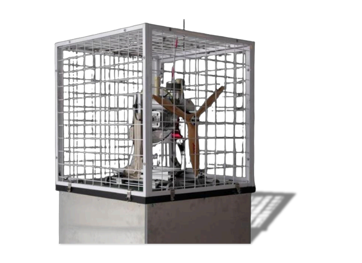

AeroBOT-D2 无人机活塞发动机测试平台
无人机动力实验室系列专业测试设备，专为油动双缸活塞发动机研发标定设计，支持扭矩、转速、油耗、温度、振动多维度同步采集与无线远程测控。

产品概述
AeroBOT-D2归属无人机动力实验室系列产品，搭载两冲程水平对置双缸汽油活塞发动机，集成无线数据采集与远程控制系统，配套图形化可视化上位机界面实时展示动力关键运行参数。平台集成五大核心测试能力，可完整模拟发动机启动、怠速、加速、稳态全工况运行状态，精准捕捉扭矩、转速、燃油消耗、机体温度、机械振动数据，既能满足高校无人机动力专业教学实验，也可用于油动无人机发动机性能标定、故障隐患排查，提前规避飞行过程中过热、部件磨损、动力异常等安全风险。
核心功能
扭矩测试功能：实时监测发动机运转扭矩，精准捕捉不同工况下扭矩数值动态变化。
转速测试功能：高精度转速传感器采集实时转速，覆盖启动、怠速、加速、稳态全运行阶段测量。
燃油消耗测试功能：精准计量单位时间/任务耗油量，计算燃油消耗率，辅助预估无人机续航与燃油搭载规划。
温度测试功能：持续监测发动机关键部件温度，及时识别过热异常，指导散热优化，保障设备运行安全。
振动测试功能：测量发动机工作振动幅值，提前检测内部零件松动、磨损、动平衡失衡等故障隐患。
产品特点
多参数同步采集，电压、电流、拉力、扭矩一站式同步监测。
可视化数字看板，图表曲线直观展示发动机性能变化趋势。
支持无线远程数据传输与远程操控，隔离测试危险区域，保障人员测试安全。
基本配置参数
应用价值
AeroBOT-D2填补油动活塞无人机地面动力测试空白，教学层面为高校动力、航空专业提供完整发动机性能实训载体；研发层面可在地面完成全工况性能标定，无需升空试飞即可验证动力方案，大幅降低油动无人机研发试飞成本与安全风险；运维层面可批量检测发动机振动、温度异常，提前排查内部磨损、过热故障，延长动力设备使用寿命。
适用场景
高校无人机动力实验室、油动活塞无人机研发标定、航空发动机性能教学实训、长航时油动无人机动力测试、发动机故障检测与维护教学、航空动力科创课题研究。